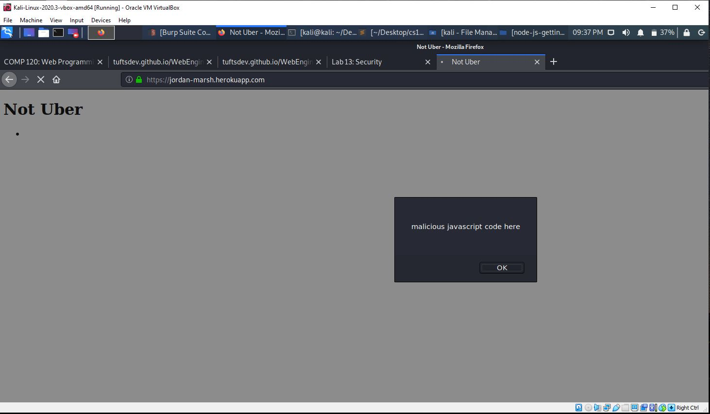
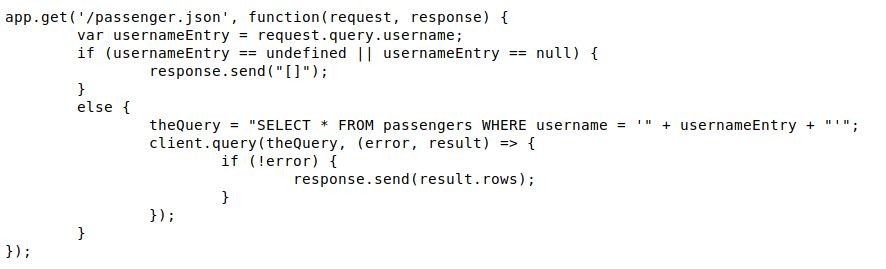

1. Introduction
https://jordan-marsh.herokuapp.com is a web app that sends and recieves data related to a ride-sharing app not disimilar to uber. If given a vehicle or passenger username, the website will return its corresponding entry from its respective database. If the website is sent data of a specific vehicle or passenger, it will add that entry to its respective database .
2. Methodology
In order to pen-test the website I primarily used curl to send payloads into the website.
3. Abstract of Findings
In my research I have found that malicious agents can abuse the website to insert potentially malicious code. This presents a major security threat as the ability to insert livecode to the website can affect all users of the website. Malicious agents could abuse this to send spyware, steal user data, or at best just inconvienice users of the website. This vulnerability leaves us at the mercy of the attacker. Furthermore, the design of the website, which allows users to recieve data by giving a username presents a privacy issue. Because there is no verification step to prove the identity of the user, individuals could access anyones location data with only their username.
4. Issues Found
Issue 1
- Issue: XSS, user input is reflected as live code on the website.
- Location / page: https://jordan-marsh.herokuapp.com/
- Severity of issue: high
- Description of issue: I used "curl --data "username=<script>alert('malicious javascript code here')</script>s"&lat=42&lng=-71" https://jordan-marsh.herokuapp.com/rides
to insert javascript code into the passengers database. The website pulls straight from the database and displays the entries on the website.
- Proof:

- Resolution: This can be resolved by sanitizing user input. Specifically filtering out punctuation from the user input prevents code being sent to the database. For example before displaying the user input, the developer can replace all < with "ampersand lt", which will continue to display punctuation but without executing the code.
Issue 2
- Issue: Access to user data wihtout verification of identity
- Location / page: https://jordan-marsh.herokuapp.com/passenger.json
- Severity of issue: medium
- Description of issue: Simply by reading the source code I was able to identify the ability to pull data from the database without verification. A dedicated individual could through brute force, send different usernames as a GET request and record their location data. What they do with that information is limitless.
- Proof:

- Resolution: This can be resolved by requiring user verification before allowing users to pull data from the database. This could come in the form of a log-in system, which prevents accessing location data unless the username matches the login.
5. Conclusions
The cause for these security issue is due to unsanitized user input. An immediate recommendation is to prevent users from inputting punctuation when it is not necessary. This prevents the use of script tags and incomplete SQL commands as a means to exploit the website. In terms of privacy, the main cause is unthoughtful design. By creating some sort of verification system (possibly in the form of a log-in system) this issue can be fixed easily.